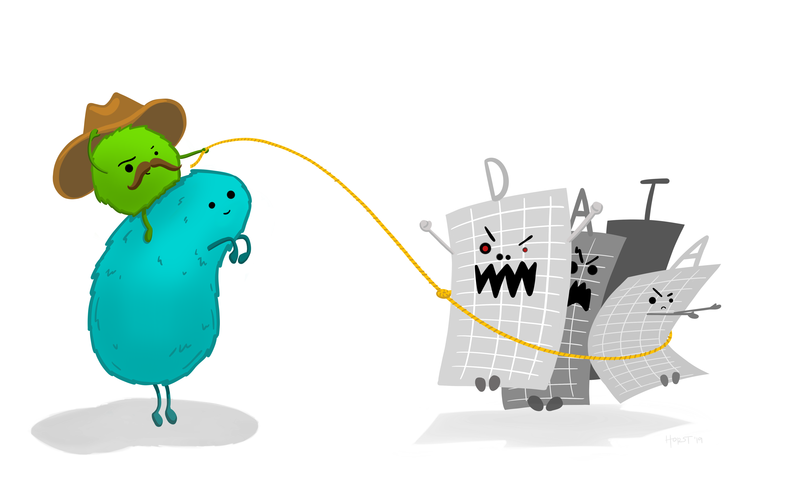
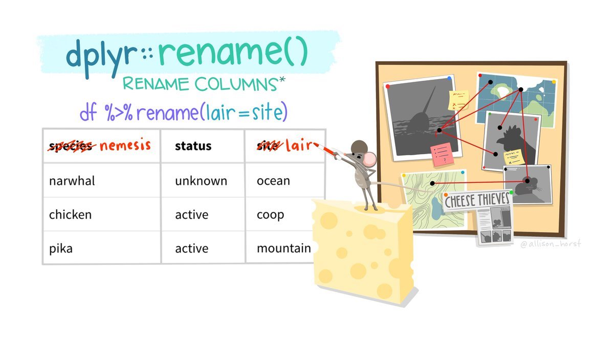

12 Basic Wrangling
Artwork by Horst (2022)
Throughout this page, explanations for the code above will appear in blocks like this one!
When wrangling your data, you will be performing a series of actions to clean and prepare it for whatever task you have. Whether you are creating visualizations, performing statistical analyses, or doing anything else, you will likely need to change your data object in some way. Below, several of the most fundamental and basic data manipulation functions will be outlined. You will notice that the function names are all verbs, denoting that they are performing some action on the data object.
12.1 Arrange
arrange() orders the rows of a data frame by the values of selected columns. By default this will be ascending, where the lowest values are in the first few rows.
|
|
|
This code changes the order of the rows in mtcars2 by the values in the wt column, with the lowest at the top.
To get rows arranged in a descending order, with highest values at the top, wrap variable names in desc() within the arrange() call. If a second column is passed, the rows with identical values on the first variable will be arranged by the values on the second.
12.2 Rename
Artwork by Horst (2022)
Columns in a dataframe can be named poorly in several ways. They could have a name that is not meaningful or interpretable, they could have a name that is too long, or they could have a name that includes special characters or is otherwise difficult to work with (e.g., including spaces).
You can rename columns by using the rename() function. This function takes the following form:
In the mtcars2 object, several variable names are shorthand or abbreviations that may not make sense to someone who is not already familiar with the dataset. rename() can be used to change these:
mtcars2 %>%
rename("weight" = "wt", "horse_power" = "hp",
"cylinders" = "cyl", "displacement" = "disp") %>%
head()
#> model mpg cylinders displacement horse_power
#> 1 Fiat X1-9 27 4 79 66
#> 2 Porsche 914-2 26 4 120 91
#> 3 Lotus Europa 30 4 95 113
#> 4 Ford Pantera L 16 8 351 264
#> 5 Ferrari Dino 20 6 145 175
#> 6 Maserati Bora 15 8 301 335
#> weight gear
#> 1 1.94 4
#> 2 2.14 5
#> 3 1.51 5
#> 4 3.17 5
#> 5 2.77 5
#> 6 3.57 5Note: You do not have to address variables in the order they appear in the df. The variable names will be mapped regardless of their position!
rename() to give those variables more informative names.
12.2.1 Saving Changes
The code above using rename() changed some of the variable names in the mtcars2 dataframe. However, if you look at the mtcars2 dataframe…
mtcars2 %>%
head()
#> model mpg cyl disp hp wt gear
#> 1 Fiat X1-9 27 4 79 66 1.94 4
#> 2 Porsche 914-2 26 4 120 91 2.14 5
#> 3 Lotus Europa 30 4 95 113 1.51 5
#> 4 Ford Pantera L 16 8 351 264 3.17 5
#> 5 Ferrari Dino 20 6 145 175 2.77 5
#> 6 Maserati Bora 15 8 301 335 3.57 5The variable names are the same as before, the the rename() code seems like it did not work! Look carefully at the code though:
mtcars2 %>%
rename("weight" = "wt", "horse_power" = "hp",
"cylinders" = "cyl", "displacement" = "disp") %>%
head()When this code is executed it just prints the results. They are not saved anywhere! If you actually wanted to update your dataframe, you need to save these results:
mtcars2 = mtcars2 %>%
rename("weight" = "wt", "horse_power" = "hp",
"cylinders" = "cyl", "displacement" = "disp")Saving over an object is a permanent change, though. You should be very careful when doing so. It is good practice to first make sure the code runs and does what you intend it to do. Once you have verified that, you can overwrite an object if you would like:
mtcars2 %>%
rename("weight" = "wt", "horse_power" = "hp",
"cylinders" = "cyl", "displacement" = "disp") %>%
head()
mtcars2 = mtcars2 %>%
rename("weight" = "wt", "horse_power" = "hp",
"cylinders" = "cyl", "displacement" = "disp")
Note: head() is used here for pedagogical purposes, but in your own code you would only want to use this when testing changes in your data. When modifying your dataframe, you would not want to accidentally overwrite it with only the first 5 rows of your new output!
A good rule of thumb is that if you need to use the object in its current state again or make significant changes to it, particularly if you change its structure, you should create a new object (e.g., mtcars3) rather than overwrite/update the existing one.
12.3 Clean Names

Artwork by Horst (2022)
The clean_names() function from the janitor package is a powerful tool to change all your column names at once to a specific naming convention. This can be used to easily convert all variable names to one of the naming conventions mentioned in the Coding Best Practices section:
- snake (snake_case)
- lower_camel (lowerCamel)
- upper_camel (UpperCamel)
- screaming_snake (SCREAMING_SNAKE)
As well as many others! You can access a particular function from a package by first specifying the package name, then two colons, then the function name. As demonstrated in the illustration above, using janitor::clean_names() is saying you want to use the clean_names() function as defined in the janitor package.
Why would you ever want to do this? Well, it is worth recognizing that functions are just variables. Instead of a value, they are defined by a series of code. Two variables of the same name cannot co-exist in your global environment. R would not know which to use! When you define x = 4 and then x = 6, the original x = 4 is overwritten.
Different packages may use the same variable names for the functions they contain. When you load a package with library(), that may overwrite some functions loaded by other packages. Thus, you may want to use a function from a particular package, but not load the entire package contents and override other functions!
12.4 Relocate
relocate() can be used to reorder the columns in your dataframe. With relocate(), you specify which column(s) you want to move, and what they should come .before or .after.

Artwork by Horst (2022)
|
|
|
This code moves the wt column after the model column.
relocate() can also move multiple columns simultaneously when passed a vector of column names.
|
|
|
- Move the
ordercolumn to be positioned before thevorecolumn.
- Move the
sleep_totalcolumn to be positioned after thesleep_cyclecolumn.
- Move both wt columns to be positioned after
genus.
12.5 Select
Above, you used head() when you wanted to output a preview of your dataframe. There will be many times like this when you want to subset your data (cutting it to show only subsets of it – which contain or exclude specific variables/observations).
There are two primary subsetting functions. The first is select(), which selects and returns only the specified columns (passed to as a vector of column names).
select(c(columns_of_interest))
|
|
|
Just as the : could be used to generate all the values in a range of numbers (e.g., 1:4 would return: 1,2,3,4), you can also use a : to return all the values in a range of columns. For example:
|
|
|
This selects the cyl column, the hp column, and all columns in between the two!
- Subset the
nameandvorecolumns.
- Subset the
genusandordercolumns.
- Subset all the sleep related columns.
select() can also be used to get rid of columns you do NOT want by negating the vector of column names using a !.
|
|
|
This selects all columns except cyl and gear.
- Use
select()to get rid of theawakecolumn.
- Get rid of all columns related to the animal’s weight.
When you specifically want to move a variable (or variables) to the front of your df, there is an easy way to do so using select() instead of relocate():
mtcars2 %>%
select(wt, everything())
#> wt model mpg cyl disp hp gear
#> 1 1.94 Fiat X1-9 27 4 79 66 4
#> 2 2.14 Porsche 914-2 26 4 120 91 5
#> 3 1.51 Lotus Europa 30 4 95 113 5
#> 4 3.17 Ford Pantera L 16 8 351 264 5
#> 5 2.77 Ferrari Dino 20 6 145 175 5
#> 6 3.57 Maserati Bora 15 8 301 335 5
#> 7 2.78 Volvo 142E 21 4 121 109 4The everything() function selects… everything! It will select all the variables in a df. So this is first selecting the wt variable, and then everything else. The result is still all the variables in the df, but wt is at the front.
12.6 Filter
The second primary subsetting function is filter(), which returns rows that meet specified condition(s). Each condition is a logical test performed on a column. This will results in a vector of TRUE and FALSE values, and only the rows for which the test evaluates to TRUE will be returned!

Artwork by Horst (2022)
As you see in the illustration above, only the rows with a check mark (where the logical test resulted in TRUE) would be returned from that filter() call!
|
|
|
This filters the dataframe to return only rows where gear has a value of 4.
Any evaluative operator can be used in the conditions:
|
|
|
This filters the dataframe to return only rows where gear has a value of 4.
The values specified in your tests do not have to be numbers, they can be text strings as well!
|
|
|
This filters the dataframe to return only rows where model is “Lotus Europa.”
1. The animals are of Rodentia order.
2. The animals have a body weight of 5 or greater.
3. The animals are not herbivores.
Multiple conditions can be strung together using logical operators:
|
|
|
This filters the dataframe to return only rows where cyl does not have a value of 4 OR hp is less than 100.
When multiple logical tests are strung together they get evaluated from left to right. You must be mindful about the order of operations and using parentheses to make sure the conditions are evaluated as you intended. For example:
filter(cyl == 4 | hp < 200 & gear == 5) would be evaluated as:filter(cyl == 4 | (hp < 200 & gear == 5))
which is different than:filter((cyl == 4 | hp < 200) & gear == 5).
1. The animals who sleep for over 14 hours total and weigh less than 3
2. The carnivores who spend over 10 hours awake, then subset only the
awake, vore, and sleep_total columns.3. All animals with a brain weight greater than 0.1 or spend less than 1 hour in rem, except those who are herbivores, then subset only the
brainwt, sleep_rem, and name columns, and arrange the results by awake from greatest to least.
12.6.1 %in%
Stringing together multiple tests of text patterns would be very cumbersome (e.g., model == "Lotus Europa" | model == "Ferrari Dino" | ...). Fortunately, there is an alternative with the %in% operator. As a reminder, this will check to see if the value of one variable is in a vector of possible values.
|
|
|
This filters the dataframe to return only rows where model is “Lotus Europa,” “Ferrari Dino,” or “Volvo 142E.”
1. Animals in the “Cetacea,” “Cingulata,” or “Pilosa” order, who sleep for a total of anywhere between 5 and 10 hours.
2. Modify the code from above to show only the
name, order, sleep_total, and brainwt. 3. Modify the code from above to arrange by brain weight from least to greatest.
12.6.2 Pattern Matching
For any number of reasons there may be times you do not want to search for an exact string match. Rather, you want to filter based on whether a value contains a certain string. This can be accomplished with grepl(), which takes the form:
grepl(pattern_to_search_for, where_to_search)
mtcars2 %>%
filter(grepl("Porsche", model))
#> model mpg cyl disp hp wt gear
#> 1 Porsche 914-2 26 4 120 91 2.14 5This filters the dataframe to return only rows where model contains the string “Porsche” in its value.
1. The animals who sleep for over 14 hours total and weigh less than 3
2. The carnivores who spend over 10 hours awake, then subset only the
awake, vore, and sleep_total columns.3. All animals with a brain weight greater than 0.1 or spend less than 1 hour in rem, except those who are herbivores, then subset only the
brainwt, sleep_rem, and name columns, and arrange the results by awake from greatest to least.
12.7 Indexing
Indexing dfs was introduced previously, but will often need to be done throughout a pipe chain. There are two functions to help with this: pull() and pluck().
12.7.1 pull()
pull() will extract a variable from a df. This can be done by the variable’s name or its numeric position (using name is always preferred). pull() is like using the $ operator to index.
The result is a vector, as variables are just vectors! This is helpful because it allows the result to then be piped to a number of functions that require a vector rather than a df. For example:
mtcars2 %>%
select(cyl) %>%
mean()
#> Warning in mean.default(.): argument is not numeric or
#> logical: returning NA
#> [1] NA
mtcars2 %>%
pull(cyl) %>%
mean()
#> [1] 5.428571By using select(), the result is a dataframe with one column. When trying to pass this to mean(), you get an NA and an error:
Warning message: In mean.default(.) : argument is not numeric or logical: returning NA.
By using pull(), the result is a vector and can be passed to mean() without issue.
- Index the
sleep_totalvariable frommsleep2.
- Find the mean of
sleep_total.
- Subset the data to only include carnivores, index the
bodywtcolumn, and find the average value. Do the same for herbivores. Which has a higher average body weight?
12.7.2 pluck()
pluck() allows you to index elements from an object, and can also be done by name or numeric position. Above, the cyl column was indexed from mtcars2. Say you wanted the 4th observation from that column:
- Subset the data for primates who spend more than 13 hours awake, arrange the
awakecolumn from greatest to least, index it, and the 2nd value from the resulting vector.
- Using a process similar to the one above, write some code that will result in the value for the 2nd lowest brain weight for omnivores who spend less than 2 hours in rem.
pluck() is extremely useful for indexing deeply into nested data structures. These will not be covered in this course, but as a brief demonstration you can consider a df to be a nested object. Each vector is an 1st level element and then values within vectors are 2nd level elements. To get the 4th value in the 3rd vector (the previous code string), you would do the following:
This can also be done with named positions.
In short, each argument in pluck() is a position to index. x %>% pluck(2, 2) == x[[2]][[2]]
12.8 Unique Entries
When working with larger dfs, it is difficult to get a sense of the unique values a particular variable may contain. You can get this using distinct().
mtcars2
#> model mpg cyl disp hp wt gear
#> 1 Fiat X1-9 27 4 79 66 1.94 4
#> 2 Porsche 914-2 26 4 120 91 2.14 5
#> 3 Lotus Europa 30 4 95 113 1.51 5
#> 4 Ford Pantera L 16 8 351 264 3.17 5
#> 5 Ferrari Dino 20 6 145 175 2.77 5
#> 6 Maserati Bora 15 8 301 335 3.57 5
#> 7 Volvo 142E 21 4 121 109 2.78 4
mtcars2 %>%
distinct(cyl)
#> cyl
#> 1 4
#> 2 8
#> 3 6The way this works is by keeping the row that corresponds with the first entry of a unique value from that particular column. This becomes clear by using the .keep_all argument
mtcars2 %>%
distinct(cyl, .keep_all = TRUE)
#> model mpg cyl disp hp wt gear
#> 1 Fiat X1-9 27 4 79 66 1.94 4
#> 2 Ford Pantera L 16 8 351 264 3.17 5
#> 3 Ferrari Dino 20 6 145 175 2.77 5To get the number of unique values you can use n_distinct(), which takes a vector of values as input.
mtcars2 %>%
pull(cyl) %>%
n_distinct()
#> [1] 31. The unique values in the
vore column.2. The number of unique values in the
vore column.
12.9 Adding Variables
To add new variables to your dataframe, you use the mutate() function.

Artwork by Horst (2022)
mutate() takes the form:
mutate("new_col_name" = content_for_that_column)
The new column’s name will be whatever is passed on the left, its contents will be the result of the R expression assigned to it. For example:
mtcars2 %>%
mutate(wt_lbs = wt * 1000)
#> model mpg cyl disp hp wt gear wt_lbs
#> 1 Fiat X1-9 27 4 79 66 1.94 4 1940
#> 2 Porsche 914-2 26 4 120 91 2.14 5 2140
#> 3 Lotus Europa 30 4 95 113 1.51 5 1510
#> 4 Ford Pantera L 16 8 351 264 3.17 5 3170
#> 5 Ferrari Dino 20 6 145 175 2.77 5 2770
#> 6 Maserati Bora 15 8 301 335 3.57 5 3570
#> 7 Volvo 142E 21 4 121 109 2.78 4 2780This creates a new variable showing the weight of each observation (car) in pounds.
Recall that all variables in a dataframe are each vectors. There are two consequences of this:
- All new variables must be the same length as the existing columns in the dataframe.
- The R expression must return a vector, and so computations over vectors can be used!
- In the example above,
wtis a vector. The R expression was a computation over a vector! Each value in thewtvector (column) was multiplied by 1000. This is essentially the same thing as seen in the section where vectors were first introduced.
- In the example above,
Multiple new columns can be created simultaneously within the same mutate() call:
price_of_gas = 6.25
mtcars2 %>%
mutate(cost_per_mile = price_of_gas / mpg,
wt_lbs = wt * 1000)
#> model mpg cyl disp hp wt gear cost_per_mile
#> 1 Fiat X1-9 27 4 79 66 1.94 4 0.2314815
#> 2 Porsche 914-2 26 4 120 91 2.14 5 0.2403846
#> 3 Lotus Europa 30 4 95 113 1.51 5 0.2083333
#> 4 Ford Pantera L 16 8 351 264 3.17 5 0.3906250
#> 5 Ferrari Dino 20 6 145 175 2.77 5 0.3125000
#> 6 Maserati Bora 15 8 301 335 3.57 5 0.4166667
#> 7 Volvo 142E 21 4 121 109 2.78 4 0.2976190
#> wt_lbs
#> 1 1940
#> 2 2140
#> 3 1510
#> 4 3170
#> 5 2770
#> 6 3570
#> 7 2780In addition to the weight in pounds variable, this code also creates a variable showing the cost of traveling 1 mile for each observation (car) considering the current price of gas.
- The sleep variables are all measured in hours. Create a new variable called
sleep_total_mthat measures total minutes of sleep.
- Create a new variable that represents the proportion of total sleep spent in rem, move that column to come after
sleep_rem, filter to show only observations with a ratio of 0.25 or greater, arrange the new column from greatest to least, and index thebodywtof the animal with the highest ratio.
12.9.1 Conditional Values
You may want a variable to have a value based on some different conditions. case_when() was introduced as a way to string together a number of ifelse type statements and return some values. This can be extremely useful when creating new variables!

Artwork by Horst (2022)
mtcars2 %>%
mutate(fuel_efficiency = case_when(
mpg <= 19 ~ "Poor",
mpg >= 20 & mpg <= 25 ~ "Average",
TRUE ~ "Great"
))
#> model mpg cyl disp hp wt gear fuel_efficiency
#> 1 Fiat X1-9 27 4 79 66 1.94 4 Great
#> 2 Porsche 914-2 26 4 120 91 2.14 5 Great
#> 3 Lotus Europa 30 4 95 113 1.51 5 Great
#> 4 Ford Pantera L 16 8 351 264 3.17 5 Poor
#> 5 Ferrari Dino 20 6 145 175 2.77 5 Average
#> 6 Maserati Bora 15 8 301 335 3.57 5 Poor
#> 7 Volvo 142E 21 4 121 109 2.78 4 AverageThis creates a new variable called fuel_efficiency. Each observation’s value for this variable depends on its value for mpg, and differs based on different conditions.
In more simple instances, ifelse() can be used:
mtcars2 %>%
mutate(power = ifelse(hp >=200, "High", "Low"))
#> model mpg cyl disp hp wt gear power
#> 1 Fiat X1-9 27 4 79 66 1.94 4 Low
#> 2 Porsche 914-2 26 4 120 91 2.14 5 Low
#> 3 Lotus Europa 30 4 95 113 1.51 5 Low
#> 4 Ford Pantera L 16 8 351 264 3.17 5 High
#> 5 Ferrari Dino 20 6 145 175 2.77 5 Low
#> 6 Maserati Bora 15 8 301 335 3.57 5 High
#> 7 Volvo 142E 21 4 121 109 2.78 4 LowThis creates a new variable called power. Each observation’s value for this variable depends on its value for hp. If hp is greater than 200, it is “High” powered, if lower than 200 then “Low” powered.
- Find out what the average total sleep is for all animals, then use
case_when()to create a new column that has the value “sleepyhead” if the animal has asleep_totalhigher than average, “wide-awake” if lower than average, and “average” if exactly average.
- Use
ifelse()to create a new column just indicating whether the animal had a “higher” or “lower”sleep_totalthan average.
12.9.2 Position
By default mutate() adds the new variable(s) to the end of the dataframe. However, you can specify what existing column you want the new column to appear .before or .after.
price_of_gas = 6.25
mtcars2 %>%
mutate(cost_per_mile = price_of_gas / mpg, .after = "mpg")
#> model mpg cost_per_mile cyl disp hp wt gear
#> 1 Fiat X1-9 27 0.2314815 4 79 66 1.94 4
#> 2 Porsche 914-2 26 0.2403846 4 120 91 2.14 5
#> 3 Lotus Europa 30 0.2083333 4 95 113 1.51 5
#> 4 Ford Pantera L 16 0.3906250 8 351 264 3.17 5
#> 5 Ferrari Dino 20 0.3125000 6 145 175 2.77 5
#> 6 Maserati Bora 15 0.4166667 8 301 335 3.57 5
#> 7 Volvo 142E 21 0.2976190 4 121 109 2.78 4This specifies that the new cost_per_mile variable should be created after mpg.
Note: The .before and .after specifications apply to ALL new variables created by the particular mutate() call. If you want to create multiple new variables and have them added in different places in your dataframe, you will need to separate them into different mutate() calls.
12.9.3 NAs
When performing vector computations, you have to be mindful of NA values in your data. NA values can cause major issues. For example:
As you can see, any time you have NA as part of your computation, the results are NA. It is because of this that NAs are thought to be contagious. In these instances, you get around this by utilizing functions like na.omit(), drop_na(), or the na.rm argument set to TRUE.
na.omit() will remove all NAs. When used on a dataframe, this will remove an entire row of data if it has an NA value for any column.
drop_na() is used specifically for dataframes, and will remove an entire row of data if it has an NA value for specific column(s) that you select. If you do not pass any specific columns, it will function similarly to na.omit() and remove an entire row if it as an NA value for any column.
ex_df = data.frame(A = c(NA, 1, 4),
B = c(1, NA, 4),
C = c(1,4,5))
ex_df
#> A B C
#> 1 NA 1 1
#> 2 1 NA 4
#> 3 4 4 5
ex_df %>%
na.omit()
#> A B C
#> 3 4 4 5
ex_df %>%
drop_na()
#> A B C
#> 1 4 4 5
ex_df %>%
drop_na(A)
#> A B C
#> 1 1 NA 4
#> 2 4 4 5- Use
drop_na()to remove all observations with anNA.
- Only get rid of observations with an
NAforbrainwt.
12.10 Modifying Existing Variables
mutate() can also be used to modify existing variables! This is done by passing a column name that already exists in the dataframe. For example:
mtcars2 %>%
mutate(wt = wt * 1000)
#> model mpg cyl disp hp wt gear
#> 1 Fiat X1-9 27 4 79 66 1940 4
#> 2 Porsche 914-2 26 4 120 91 2140 5
#> 3 Lotus Europa 30 4 95 113 1510 5
#> 4 Ford Pantera L 16 8 351 264 3170 5
#> 5 Ferrari Dino 20 6 145 175 2770 5
#> 6 Maserati Bora 15 8 301 335 3570 5
#> 7 Volvo 142E 21 4 121 109 2780 4By tweaking the code above, instead of creating a new one, the existing wt variable is modified.
Note: You will generally not want to overwrite a variable if you are changing it in some meaningful way (as is the case in the example above). Instead, you should create a new variable.
12.10.1 Change Variable Types
One of the ways in which it is appropriate to modify a variable is when you need to change the type of data it contains. In R, you can change data type by using the as.* function. For example, as.logical() changes the passed values to be logical. The one exception is that when changing something to a factor, you should use factor() (more on this below.)
mtcars2 %>%
mutate(mpg = as.character(mpg),
cyl = factor(cyl)) %>%
glimpse()
#> Rows: 7
#> Columns: 7
#> $ model <chr> "Fiat X1-9", "Porsche 914-2", "Lotus Europa"…
#> $ mpg <chr> "27", "26", "30", "16", "20", "15", "21"
#> $ cyl <fct> 4, 4, 4, 8, 6, 8, 4
#> $ disp <dbl> 79, 120, 95, 351, 145, 301, 121
#> $ hp <dbl> 66, 91, 113, 264, 175, 335, 109
#> $ wt <dbl> 1.94, 2.14, 1.51, 3.17, 2.77, 3.57, 2.78
#> $ gear <dbl> 4, 5, 5, 5, 5, 5, 4This modifies the data in the mpg column to be of character, and the data in the cyl column to be a factor. The output of this is then piped to glimpse() so the types of each column will be displayed.
You can see from this output that all the numbers in mpg have quotes around them. Also, it is labeled “cyl look unchanged, you can see it now says “
- As mentioned above, the weight columns are measured in kg. Change these columns so that they contain the weight in lbs (1kg = ~2.205 lbs). Arrange the new body weight column from least to greatest, and index the value for the lightest animal in the dataset.
- Change the
vorecolumn to be a factor instead of character, and theawakecolumn to be a character instead of numeric.
12.10.2 Factors
Factors are important, and can be a little tricky to work with, so they get their own section. Factors are categorical data that have a specific order, and by proxy a specific defined range of possible values (e.g., Months of the year).
12.10.2.1 Factor Conversion
When working with factors, particularly when converting data to and from a factor, you have to be very careful. Consider the following:
data.frame(test = factor(c("0", "1")))
#> test
#> 1 0
#> 2 1This simple dataframe that has one column with data as a factor with the values 0 and 1. Say you want to change that data from a factor to numeric. Simple enough, just apply the appropriate as.* function (as.numeric()).
However, observe the output from doing so:
data.frame(test = factor(c("0", "1"))) %>%
mutate(test = as.numeric(test))
#> test
#> 1 1
#> 2 2This is obviously not what was intended. What is happening here is mutate() is taking the level of each value, with 0 being level 1 and 1 being level 2. Instead, you have to circumvent this issue by first converting the values to a character, and then a number:
data.frame(test = factor(c("0", "1"))) %>%
mutate(test = as.character(test),
test = as.numeric(test))
#> test
#> 1 0
#> 2 1The take-home point is to always double check that your code is doing what you intend it to, especially when converting to and from a factor!
12.10.2.2 Reorder Levels
While the levels of a factor are ordered, you may at times want to change what that order is. One of the more common instances when this will occur is in visualizations. Consider the following:
mtcars2 %>%
mutate(cyl = factor(cyl)) %>%
ggplot(aes(x = cyl, fill = cyl)) +
geom_bar(position = "identity")The x-axis has a sensible arrangement, but this 1. is a function of the fact that the factors happen to be numbers, 2. is not particularly aesthetically pleasing when looking at the actual bars. The bars themselves have an inherent ordering and it may make more sense to organize them as such. This can be accomplished using fct_infreq(), which will reorder the levels of a factor in their frequency of occurrence (with highest frequency first).
mtcars2 %>%
mutate(cyl = factor(cyl) %>%
fct_infreq()) %>%
ggplot(aes(x = cyl, fill = cyl)) +
geom_bar(position = "identity")To order the levels with lowest frequency first, you can use fct_rev() for “reverse frequency.”
mtcars2 %>%
mutate(cyl = factor(cyl) %>%
fct_infreq() %>%
fct_rev()) %>%
ggplot(aes(x = cyl, fill = cyl)) +
geom_bar(position = "identity")Note: Notice that the color mapping is changing as well. In the bottom graph, the blue bar is on the 4 cylinder bar, whereas on the preceding graph it was on the 6 cylinder bar. This is because color mappings correspond to factor levels!
Most of the time you will not be creating graphs to visualize counts of a single variable. Instead, you will be visualizing the relationship or comparison between two more more variables, like in the graph below:
mtcars2 %>%
mutate(cyl = factor(cyl)) %>%
ggplot(aes(y = mpg, x = cyl)) +
stat_summary(fun.data = "mean_se", geom = "pointrange")To reorder the levels of a factor by their relationship with another variable (instead of frequency of occurrence), you can use fct_reorder(). In fct_reorder(), you must specify the factor to reorder, and the other variable you wish to reorder the levels by.
mtcars2 %>%
mutate(cyl = factor(cyl)) %>%
ggplot(aes(y = mpg, x = fct_reorder(cyl, mpg))) +
stat_summary(fun.data = "mean_se", geom = "pointrange")
Note: fct_reorder() was used in the ggplot call directly because this is a fairly particular reordering. It is unlikely that, outside of for the purpose of generating this specific visualization, you would want the levels of cyl to be ordered based on its level of mpg.
Also, you can combine fct_reorder() with fct_rev() to reverse the order of the levels.